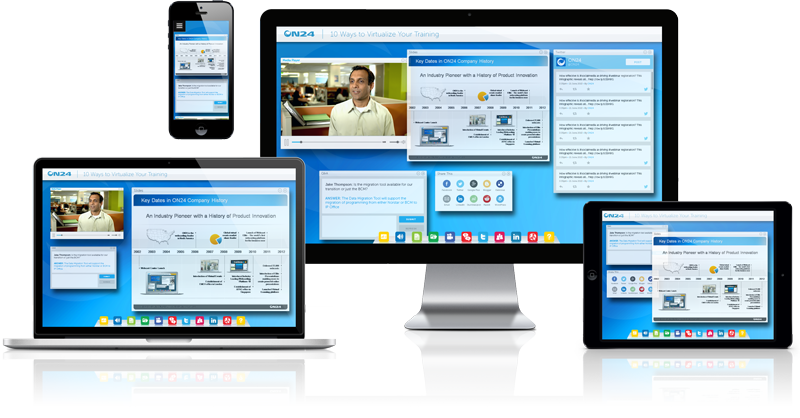

Let's face it. Tech is here to stay. If you’re operating a small business and you don't have an active Website, you're already behind the curve. Whether you deploy a basic online brochure or an elaborate content management system, you need an online presence to reach your full potential.
An online presence instills trust with potential customers. It reinforces your brand with new and existing customers. It allows you to showcase the best you have to offer like no other advertising medium. It doesn't matter if your business is local or international. Nothing beats the power of the internet. If you haven't already done so, it's time to get connected.